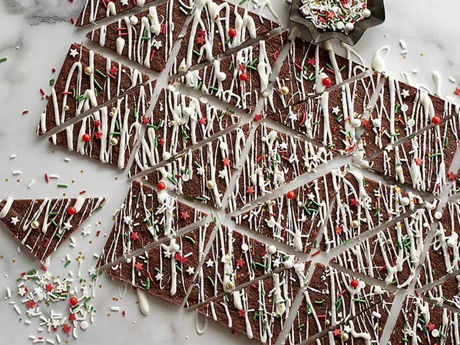

Chewy and fudgy brownie lovers will be in heaven. Drizzled with peppermint white chocolate and decorated with sprinkles, this brownie brittle is a tasty treat. This bark can easily be adapted to any holiday or occasion—just change out your sprinkles!
Preheat oven to 350 degrees F. Line a 10x15x1-inch jelly roll pan with parchment paper or foil.
Melt butter and chocolate in a medium saucepan over low heat until smooth. Remove from heat; stir in sugar, espresso powder, salt, and vanilla until well combined. Add egg and stir vigorously until well combined. Add flour and stir vigorously until well combined and the mixture is glossy.
Spread batter evenly into the prepared pan. Bake until the surface is dry to the touch, 16 to 19 minutes. Remove the parchment or foil to transfer the bark onto a cutting board. While the bark is still hot, cut it into 3-inch triangles.
Stir melted candy coating and peppermint extract together in a small bowl. Drizzle the mixture over the brownie bark. Immediately sprinkle with holiday sprinkles. Cool completely.